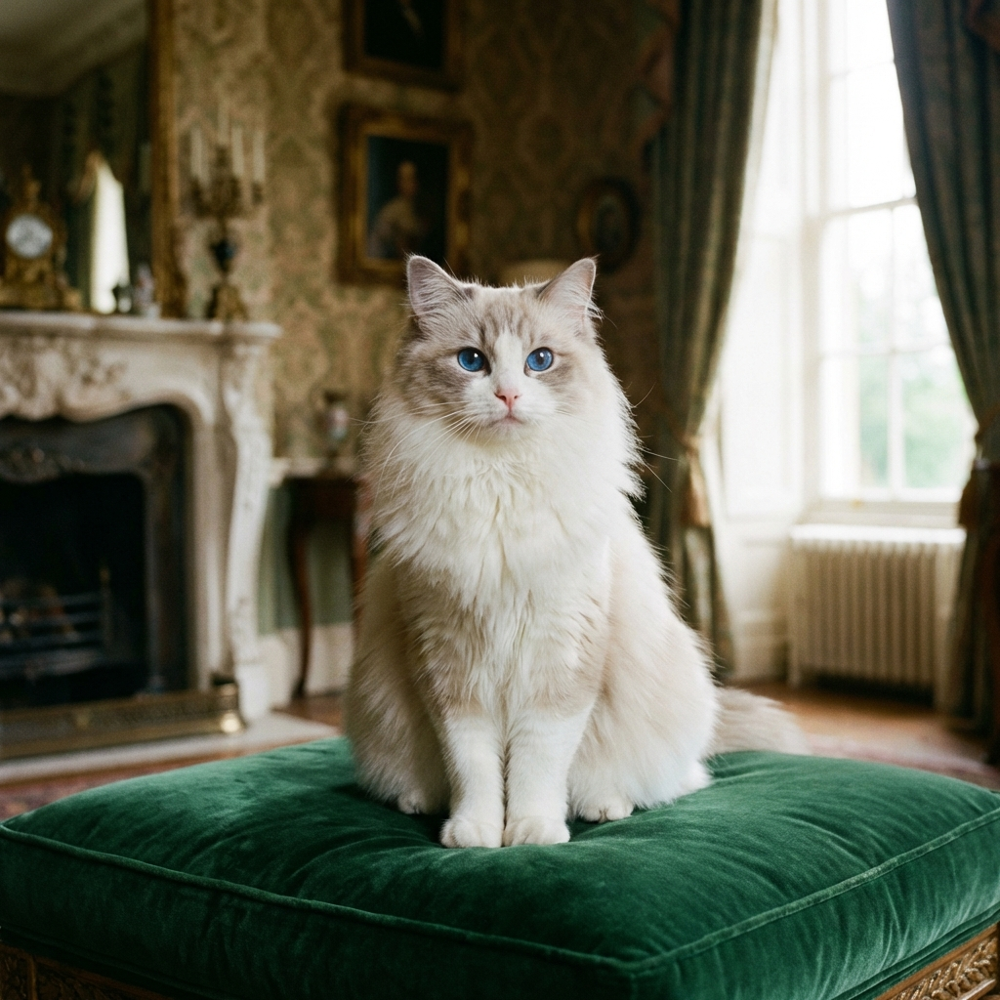
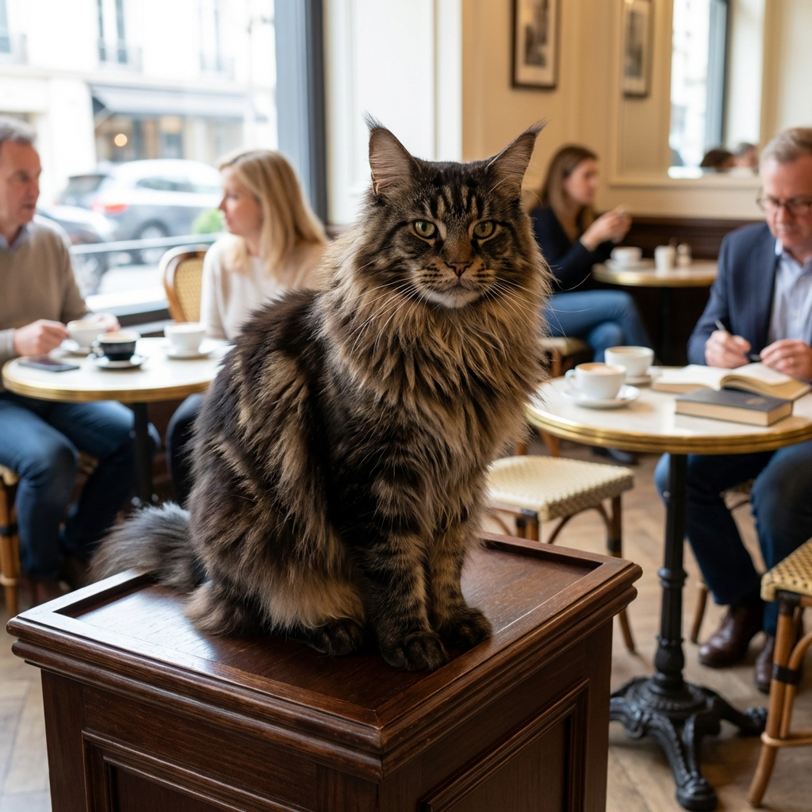
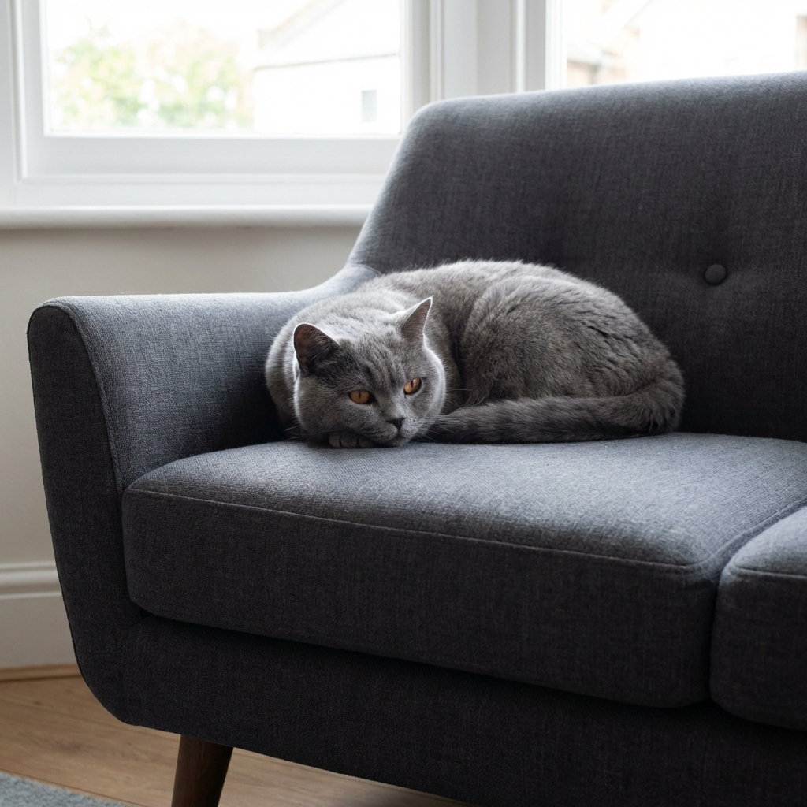
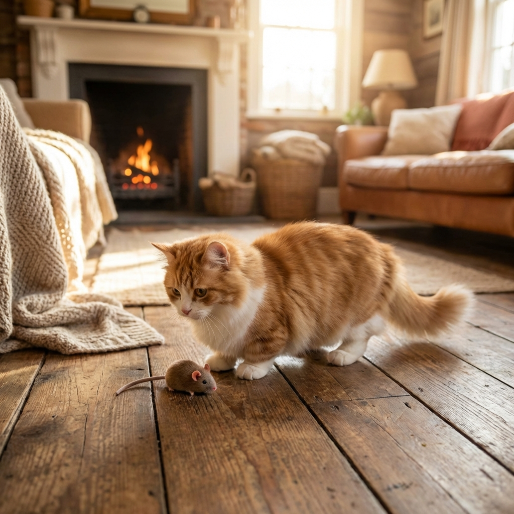

ねこのお友達
Our Lovely Casts
個性豊かな猫たちが、皆様のご来店をお待ちしております。
お気に入りの子を見つけて、素敵な時間をお過ごしください。

Luna
Persian / F / 3yo
雪のような毛並みを持つ、気高い女王様。静かな時間を愛しています。

Milo
Scottish Fold / M / 1yo
好奇心旺盛な遊び好き。テーブルの陰からあなたを見つめているかも。

Bella
Ragdoll / F / 2yo
透き通るような青い瞳と、シルクのような手触り。抱っこが大好き。

Leo
Maine Coon / M / 4yo
森の王者のような風格。大きな体で優しくあなたを見守ります。

Coco
British Shorthair / F / 2yo
落ち着いたグレーの毛並み。日向ぼっこが日課のマイペース屋さん。

Daisy
Munchkin / F / 1yo
短い足でちょこちょこ歩く姿が人気。元気いっぱいの末っ子キャラ。